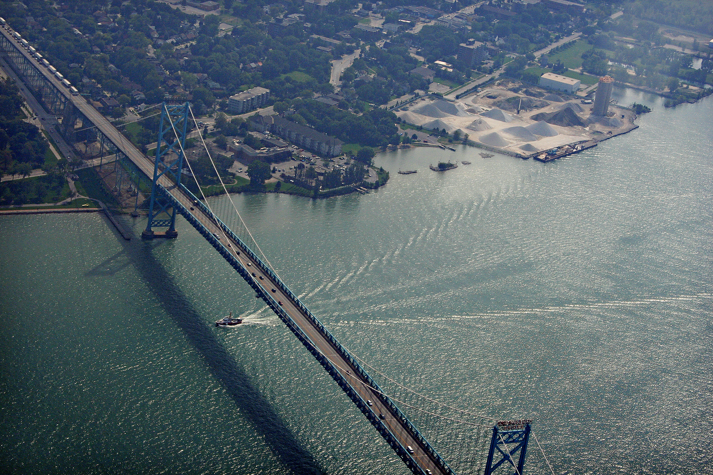

Trends in U.S.-Canada and U.S.-Mexico Border Crossings
Viewing trends in border crossings with a closer look at the impact of COVID-19.
Katie Olsen
In 1994, the collection of border-crossing data began in response to the signing of the North Amerian Free Trade Agreement (FAFTA), signed by the United States, Canada, and Mexico. Since 1995, the Bureau of Transportation Statistics has maintained the Border Crossing/Entry Database with data provided by the U.S. Customs and Border Protection. This database allows the tracking of all incoming traffic to the United States. The database includes pedestrians, personal vehicles, buses, trains, trucks, and containers entering the United States through land ports and ferry crossings on the U.S.-Canada and U.S.-Mexico borders. This visual essay explores the trends in U.S. border crossings based on this data from the Bureau of Transportation Statistics.
From 1996 until 2020, 73% of border crossings have been from Mexico and 27% from Canada.
San Ysidro Border Crossing. (Photos by Josh Denmark)
An Overview of Trends
The greatest number of border crossings into the United States are from the land that borders Mexico. Most crossings are made through personal vehicles and personal vehicle passengers. Pedestrians are the next largest group.
Pedestrians waiting in line for U.S. Customs and Border Protection processing at Calexico, California. (Photo by Josh Denmark)
Other Events that Stand Out from the Overview of Trends
An Overview to the Ports of Entry
Fifteen states have ports of entry in this dataset. Four states border Mexico: Arizona, California, New Mexico, and Texas. Eleven states border Canada: Alaska, Idaho, Maine, Michigan, Minnesota, Montana, New York, North Dakota, Ohio, Vermont, and Washington. There are 119 ports of entry to the United States, 90 ports with Canada, and 29 ports with Mexico.
The United States' border with Mexico is 1,954 miles long, starting from the Pacific Ocean to the southern tip of Texas. The Canada-United States border is the longest international border in the world between two countries at 5,525 miles.
A Closer Look at the Ports of Entry
The busiest Canadian port is Buffalo Niagara Falls in New York. From 1995 until 2020, it has had more than 562.1M entries into the United States. The Canadian port of entry with the lowest amount of border crossings is Toledo, located in Ohio. It totaled 607 crossings from personal vehicles by ferry (seasonal crossings from April to mid-September). The Whitlash port of entry, located in Montana, has the lowest traffic of all the land border crossings at 69,196 crossings. It averages just two vehicles per day.
The busiest Mexican port is San Ysidro in California. From 1995 until 2020, it has had more than 1.2B entries into the United States. The Mexican port of entry with the lowest number of border crossings is Houston. It had a total of 2 Truck Containers Loaded. The Boquillas port of entry, located in Texas, has the lowest traffic of all land border crossings at 74,568. It is a port of entry that is unstaffed by Customs and Border Protection agents but has at least one National Park Service employee present when it's open. It is the only unstaffed legal border crossing on the U.S.-Mexico border and only one of four that allow only pedestrian traffic.
Left: Rainbow Bridge as seen from Canada in 2013. (Photo by Verne Equinox) Right: U.S. Border Inspection Station at Whitlash, Montana as seen in 1997. The building was replaced in 2012. (Photo by Wbaron)
Left: Cars in line at the U.S. Customs and Border Protection inspection station at San Ysidro, California. (Photo by Mani Albrecht) Right: Boquillas Port of Entry, Texas in 2013. (Photo by Bic)
Ambassador Bridge, in Detroit, is one of the few privately owned U.S.-Canada crossings. It was owned by Grosse Pointe billionaire Manuel Moroun (through the Detroit International Bridge Company) until his death in July 2020. It carries around 60-70 percent of commercial truck traffic in that region.

Aerial photo of the Ambassador Bridge. It connects Detroit, Michigan with Windsor, Ontario. (Photo by Angela Anderson-Cobb)
Looking at the Impact of COVID-19
Travel and transportation will feel the effects of the COVID-19 pandemic for years to come. Beginning in March of 2020, stay-at-home orders started to take effect in various states restricting travel. Throughout the year there were marked reductions in all forms of passenger travel. The U.S.-Canada border has seen more of a reduction in crossings than the U.S.-Mexico border, particularly pedestrians and passengers. There was a reduction in commercial transportation from March to May/June, but it has been steadily recovering from those losses.
Looking at a year of change in percentages. Comparing the data for 2019 and 2020.
Comparing types of transportation for the Month of December 2019 and December 2020.
Comparing pedestrians and passengers for the Month of December 2019 and December 2020.
Takeaways
This visual essay looks at the dataset for in-bound U.S. border crossings and focuses mainly on the yearly traffic from 1995 to the present day. It allows us to see the different forms of transportation utilized at various ports, how transit has changed over time at both border crossings, and how events can shape travel trends.
Please note that this dataset only shows trends in traffic crossings into the U.S. from Mexico and Canada. The data for outbound traffic crossings are not collected. The dataset also compiles the statistics by month.
Data sources
Source: Bureau of Transportation Statistics, U.S. Government
URL: https://www.kaggle.com/divyansh22/us-border-crossing-data
URL: https://data.bts.gov/Research-and-Statistics/Border-Crossing-Entry-Data/keg4-3bc2/data
Photos
U.S. Customs and Border Protection (https://www.flickr.com/photos/cbpphotos)
Bureau of Transportation Statistics, U.S. Government
https://en.wikipedia.org/wiki/List_of_Canada%E2%80%93United_States_border_crossings
https://en.wikipedia.org/wiki/List_of_Mexico%E2%80%93United_States_border_crossings
https://en.wikipedia.org/wiki/Canada%E2%80%93United_States_border
https://en.wikipedia.org/wiki/Mexico%E2%80%93United_States_border